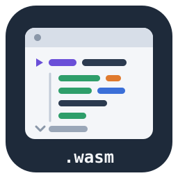
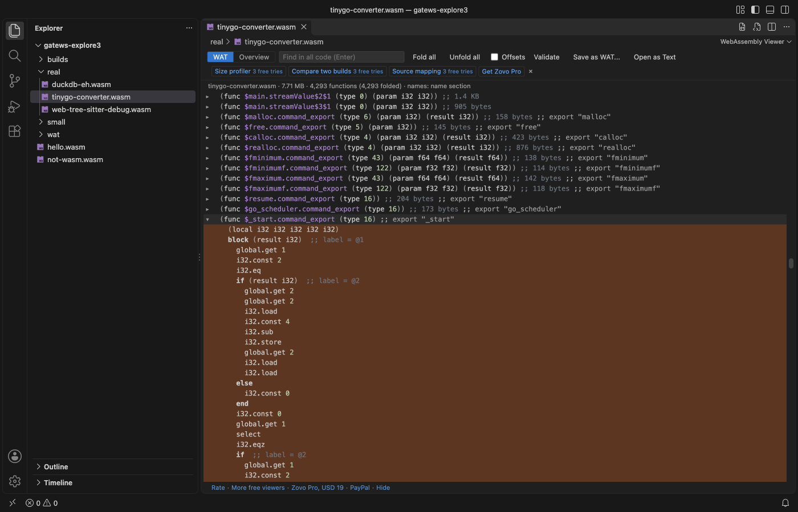

WebAssembly Viewer (WASM, WAT)
WebAssembly Viewer (WASM, WAT), a VS Code extension by Zovo
WebAssembly viewer by Zovo for VS Code: click a .wasm file and read it as WAT text, with one fold per function, instead of binary noise. The Overview tab shows what is inside the module: sections with their sizes, imports, exports, memories, tables, globals, custom sections and the name section. WAT to WASM and WASM to WAT work in the editor, with errors and their line numbers. No toolchain to install, no account, no network.
Free, MIT license. Needs VS Code 1.75.0 or newer. Extension ID zovo.zovo-wasm-viewer, version 0.1.0.

Questions people ask
Is WebAssembly Viewer (WASM, WAT) free?
Yes. WebAssembly Viewer (WASM, WAT) is free and MIT licensed.
How do I install WebAssembly Viewer (WASM, WAT)?
Click "Install in VS Code" above, or search for zovo.zovo-wasm-viewer in the Extensions view.
Free
- Open
.wasmfiles as WAT text in the wasm2wat layout: types, imports, functions, tables, memories, globals, exports, elements and data. Names from the name section ($main,$memcpy) when the module has them. - Fold and unfold each function. Large modules open folded and print a function only when you open it, so a 35 MB module opens in about a second.
- Click a
call,ref.funcor an export to go to its function. Find in all code searches every function, folded or not. - Overview: file and code size, every section with its offset, size and share, imports with their types, exports (click one to go to its function), memories in pages and bytes, tables, globals with their values, custom sections, the name section, producers and target features.
- Validate checks the whole module with wabt (types, stack, indices) and lists each problem with its byte offset.
- Save as WAT writes the text to a
.watfile; Open as WAT Text shows it in a read-only text editor. .watand.wastfiles get syntax colors, an outline, folding and errors with line and column while you type. Compile WAT to WASM writes the.wasmnext to the file and opens it in the viewer.- Reads modern modules: SIMD and relaxed SIMD, threads and atomics, exception handling (old and new), GC and reference types, tail calls, multi-memory, memory64 and multi-value.
- Byte offsets next to each instruction (the Offsets box), for crash reports and hex dumps.
- No network requests, no telemetry, nothing shows when VS Code starts.
Zovo Pro
Zovo Pro: USD 19 once. One payment unlocks the Pro tools in every Zovo extension. Each Pro tool has 3 free tries:
- Size profiler: what makes the
.wasmbig. The biggest functions and data segments, size by section, by import module and by crate, namespace or Go package, the bytes each function keeps alive, functions nothing calls, and for any function the call chain that keeps it in the build. Copy or save the report as Markdown. - Compare two builds: this build against another
.wasmor the git HEAD version. Total and section sizes, functions added, removed, grown and shrunk (matched by name, hash suffixes ignored), imports and exports, and a Markdown size table to paste into a pull request. - Source mapping: reads DWARF line tables (
.debug_line, also from a separate debug file) or a source map next to the module. Shows the source file and line of each function, the code size per source file, and the source line next to each instruction in the WAT view. Click a file to open it.
The Pro tools are in the viewer toolbar, the Command Palette (they end in "(Pro)") and the Explorer right-click menu on .wasm files ("Zovo Pro: ..."). A try counts only when the tool showed its result. wasmViewer.showProTools: false hides all of it.
Run Zovo Pro: Get Zovo Pro to pay by card, with GitHub Sponsors or PayPal (team of 5: USD 59), or to enter a key.
How to use it
Click a .wasm file in the Explorer: it opens in the viewer. The toolbar switches between WAT and Overview, folds or opens all functions, finds text in all code (Enter starts the search, Ctrl+F or Cmd+F jumps to the box), shows byte offsets, validates the module and saves or opens the text.
For a .wat file, the Compile WAT to WASM button in the editor title bar (or a right-click on the file) writes name.wasm next to it. Errors show in the Problems view with their line and column, and the cursor jumps to the first one.
Settings
wasmViewer.useNames: use names from the name section in the text (default on).wasmViewer.openFunctionsBelowKB: modules up to this size open unfolded (default 1536).wasmViewer.showOffsets: byte offsets left of the text (default off).wasmViewer.checkWat: errors while you type in.watfiles (default on).wasmViewer.openAfterCompile,wasmViewer.openAsTextMaxMB,wasmViewer.maxFileSizeMB.wasmViewer.showProTools,wasmViewer.askForRating,wasmViewer.showSupportLinks.
Privacy
No network requests and no telemetry. Files are read from your disk only; the viewer never writes to a .wasm file. WAT to WASM and Validate use wabt (Apache 2.0), bundled as WebAssembly inside the extension. Compare with git HEAD runs your local git show, only in a trusted folder. A source map on the web is never downloaded.
Known limits
- WebAssembly components (the component model) are not read yet; core modules are.
- Folded s-expression output (the
(i32.add (local.get 0) ...)style) is not offered; the text is flat, like wasm2wat's default. - Source mapping reads line tables only: no variables, types or inlined call stacks. DWARF 2 to 5 and v3 source maps are read; split DWARF (
.dwofiles) is not. - Open as WAT Text asks first for modules over 16 MB, because the text of a large module can be hundreds of MB. Save as WAT works for any size.
Guides
Install WebAssembly Viewer (WASM, WAT)
Click the button to open VS Code and install it, or press Ctrl+P (Cmd+P on macOS) in VS Code and run ext install zovo.zovo-wasm-viewer.
Free, MIT license. Needs VS Code 1.75.0 or newer. Extension ID zovo.zovo-wasm-viewer, version 0.1.0.
Source code and issues are on GitHub.
Zovo Pro and support
Zovo Pro: USD 19 once, every Zovo viewer. It turns on the Pro tools in this extension and in the other Zovo extensions you use. The free features stay free.
After a card payment your license key shows on the next page. Paste it with the command "Zovo Pro: Enter a key".
You can also support the work with no Pro:
Need your format supported?
Open a format request with a sample file, and I reply there whether it can be done. For USD 299 once, through this GitHub Sponsors tier, I add your file format or a missing feature to this extension, with tests, within 7 days.